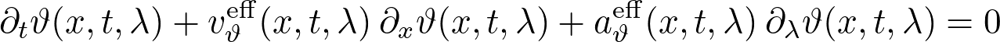
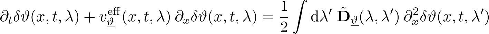
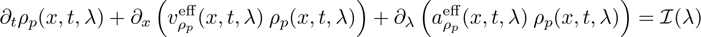

Solvers for GHD propagation equation
iFluid implements a variety of solvers for solver the Euler-scale continuity equation or modifications thereof. Here we list the solvers currently implemented in iFluid. For a full documentations of the solvers we refer to the source code. For a guide on how to implement your own solver, see here.
First order Euler solver
Simple first order solver of the Euler-scale propagation equation

Implemented in the FirstOrderSolver class.
Second order Euler solver
Second order solver of the Euler-scale propagation equation
Implemented in the SecondOrderSolver class. More information regarding the method here.
Linearized diffusion solver
Solves the linearized diffusion equation with no inhomogeneous couplings

The solver propagates a small perturbation on top of a homogeneous background. Implemented in the LinearDiffusionSolver class. More information regarding the method here.
Collision integral solver (dimensional crossover)
Solves the Euler-scale propagation equation with added collision integral

Currently this class only works for the Lieb-Liniger model in the dimensional crossover regime. The collision integral takes into account collision with transverse excited atoms breaking the integrability of the model. Implemented in the CollisionSolver class. More information regarding the method here.